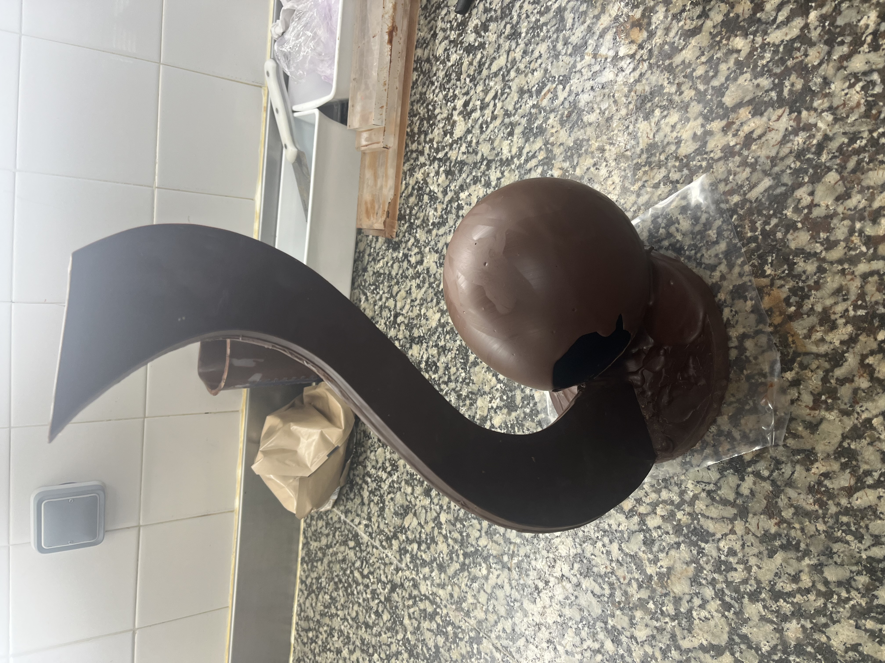
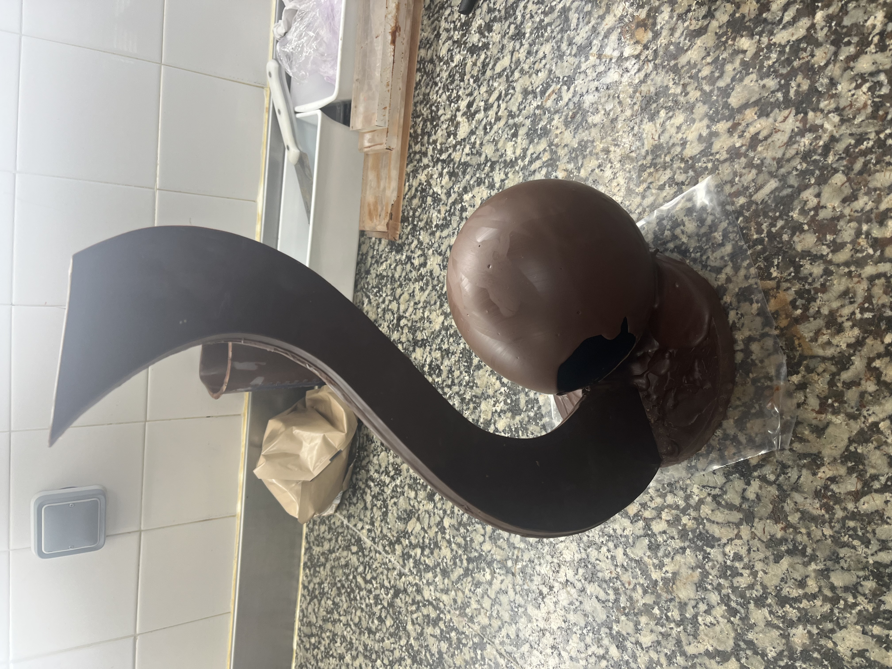
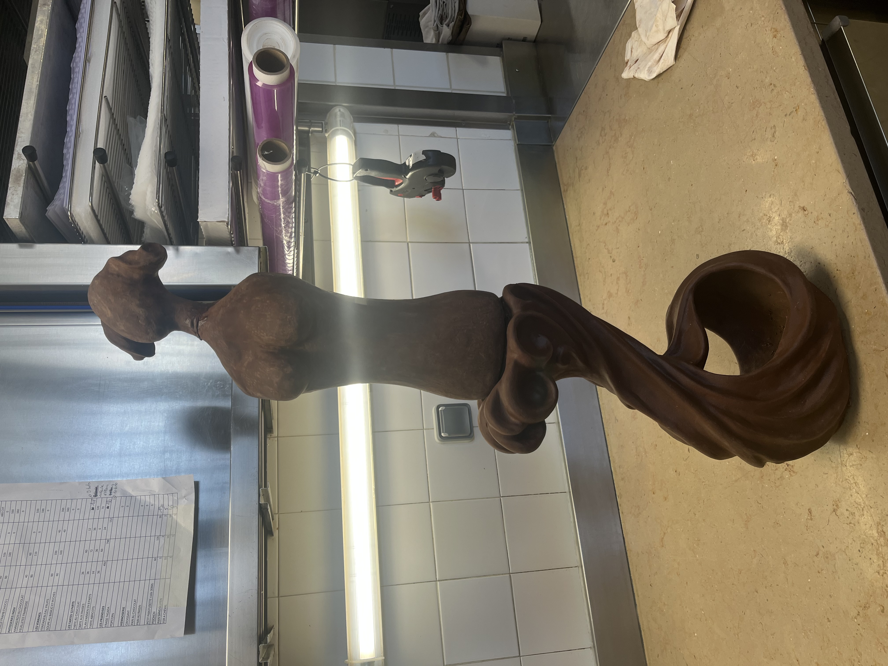
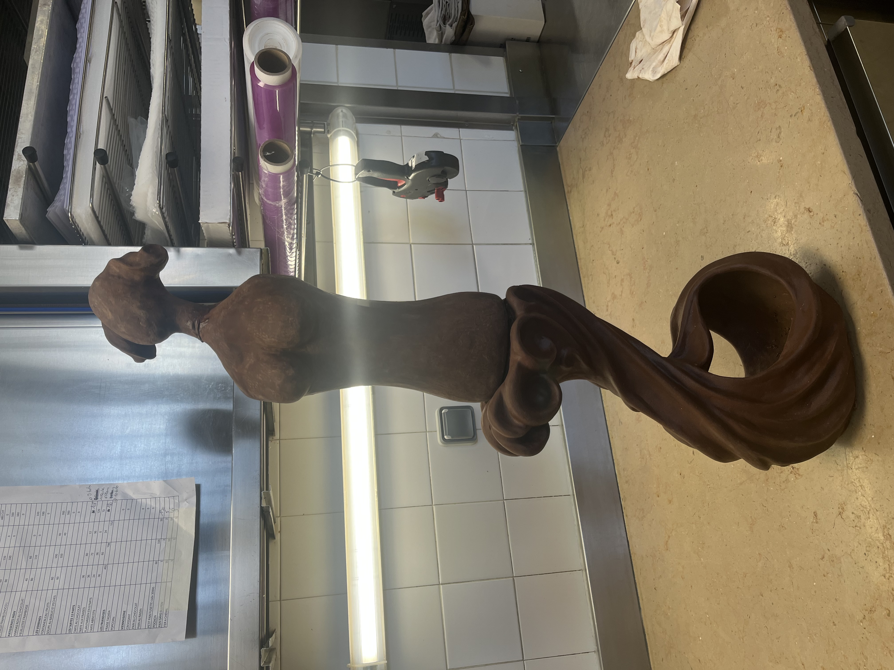

Bienvenue dans mon univers sucré
Avant d’entamer toute ébauche, j’ai jugé nécessaire de faire le point sur les idées que je souhaitais intégrer dans ma pièce. Mes inspirations sont à la fois marines, architecturales et historiques, ce qui m’a permis d’enrichir ma réflexion et de diversifier mes sources d’idées. J’ai donc réalisé un mood board rassemblant ces éléments, ce qui m’a permis d’y voir plus clair.

Galerie
Après plusieurs croquis et esquisses, je n’étais pas pleinement convaincu par mon idée. Je me suis donc rapidement attelé au travail du chocolat, afin de laisser libre cours à ma créativité grâce à la sensibilité qu’exige cette matière. Cependant, mon intention profonde est restée la même : créer une pièce imposante par son volume, mais légère, dynamique, et capable de donner l’impression de prendre vie.
 

Je me suis laissé porter par la dextérité et la sensibilité que requiert le chocolat, laissant ainsi libre cours à mon imagination en créant une vague.
La Graine et la Mer
Puis la pièce maîtresse de cette sculpture : la statue intitulée « La Graine et la Mer », que j’ai réinterprétée avec mon feeling, ma sensibilité et toute l’émotion que j’ai pu y insuffler pour la créer. Inventer une femme à partir de rien pour parvenir à ce résultat a été un réel exercice de créativité.
 

Je devais ensuite fusionner ces deux pièces pour n’en former qu’une seule. C’est à ce moment que m’est venue l’idée de représenter cette femme comme une sorte de déesse du fond marin marsaillais, émergeant de sa vague pour se montrer au monde, portant son fruit dans la main et l’exposant au grand jour.
C’est ainsi qu’est née ma pièce : un subtil mélange de beauté, d’art et de vie, où chaque geste, chaque forme et chaque reflet de lumière traduit mon univers. Une création qui me représente, comme si mon identité et ma sensibilité prenaient forme. Aujourd’hui je suis fier de vous présenter cette œuvre et de l’exposer enfin au grand jour, devant les yeux des spectateurs.
Contact
mail@gmail.com